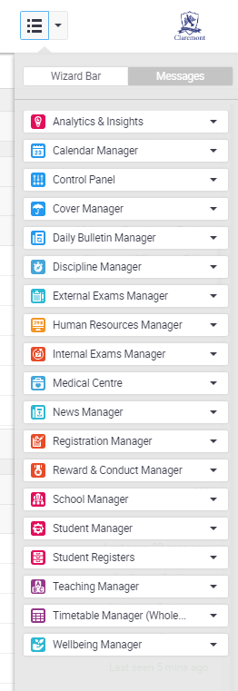

THE WIZARD BAR
AKA The most useful tool
The wizard bar is probably the most useful place on the iSAMS website, it has quick access to all you need (as you can see from the image on the left). The wizard bar will save you a lot of time and effort, remember to utilize it!
